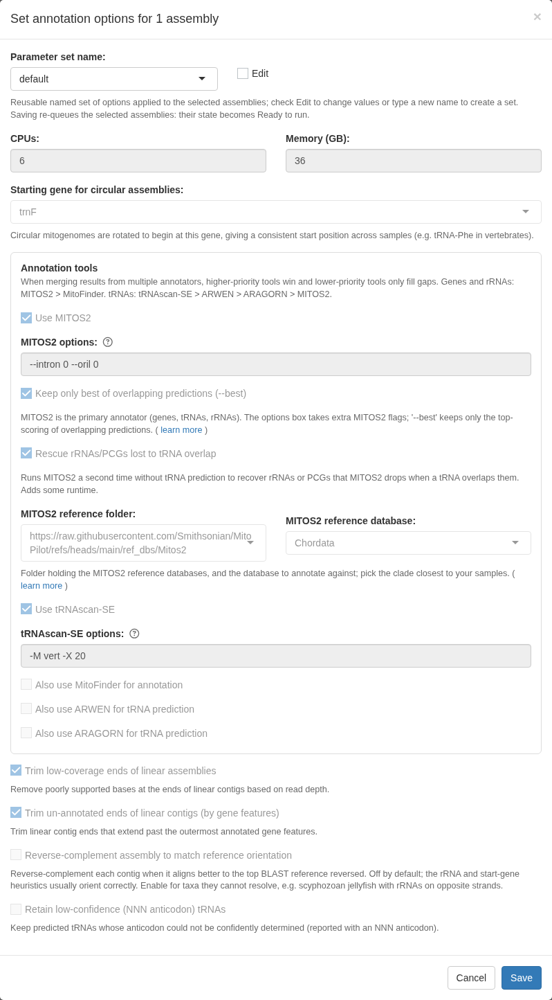
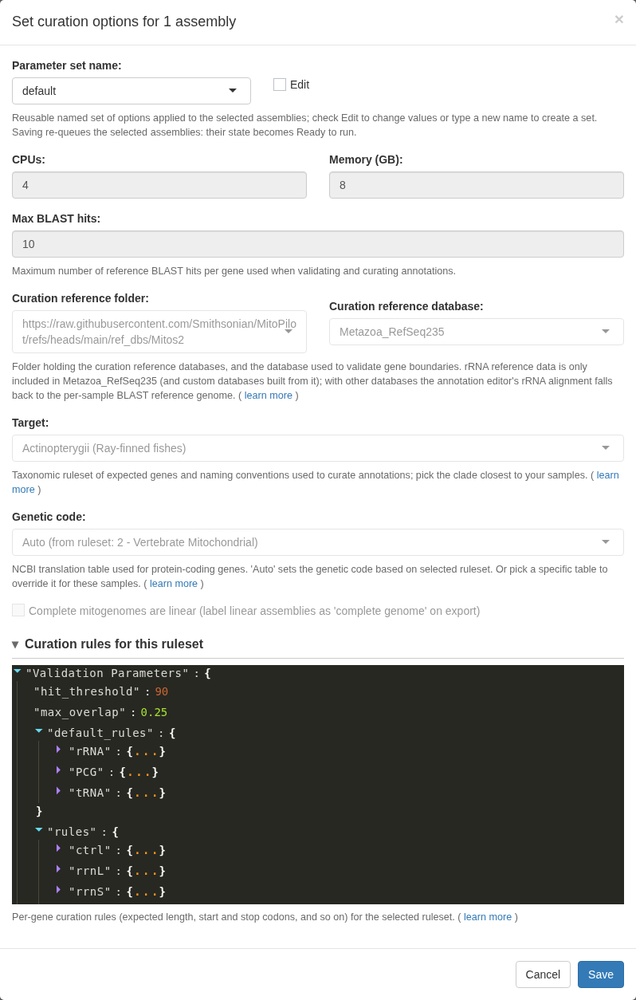
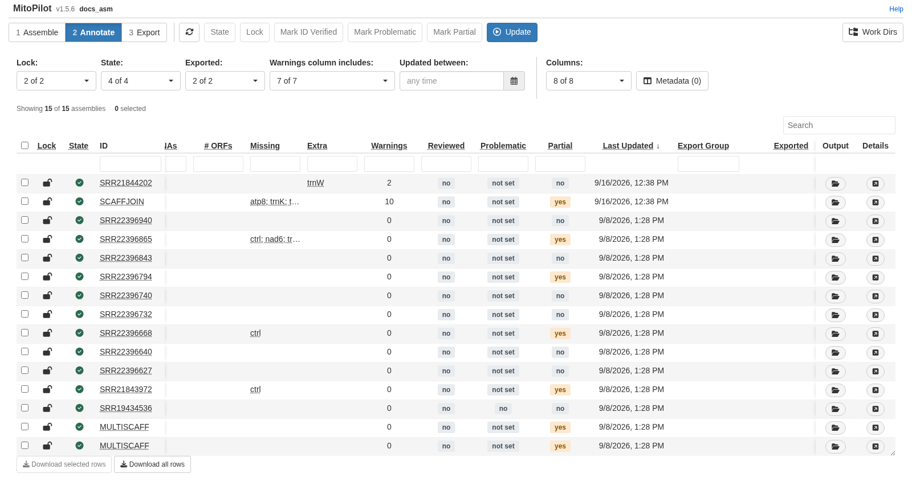
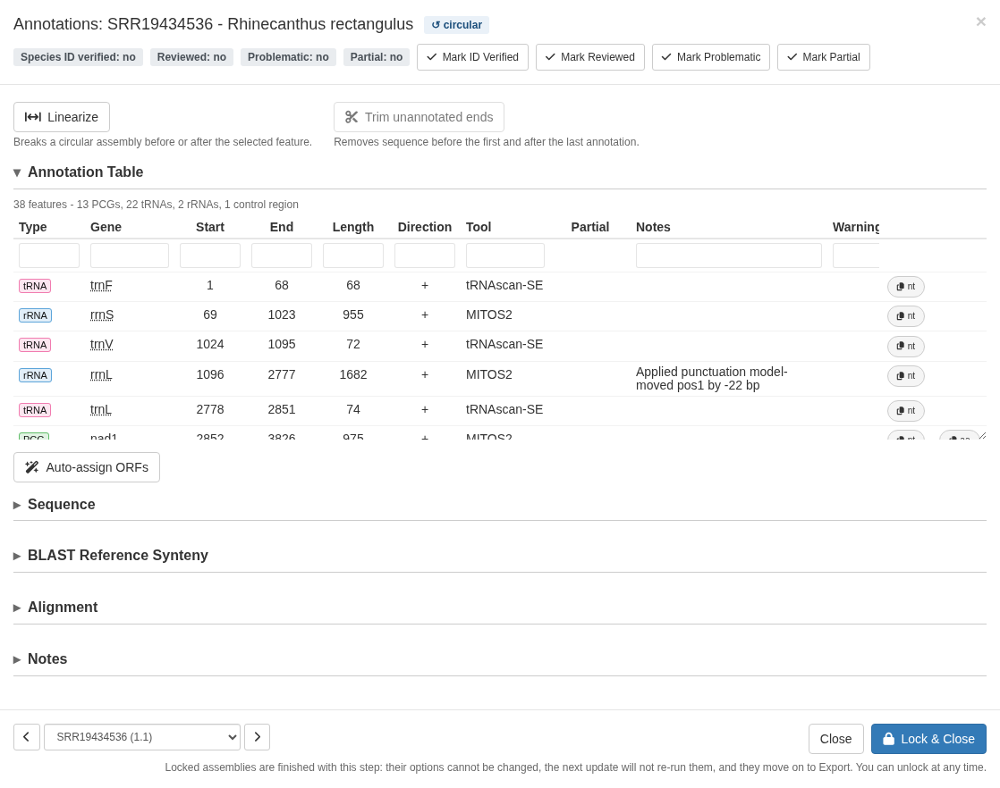
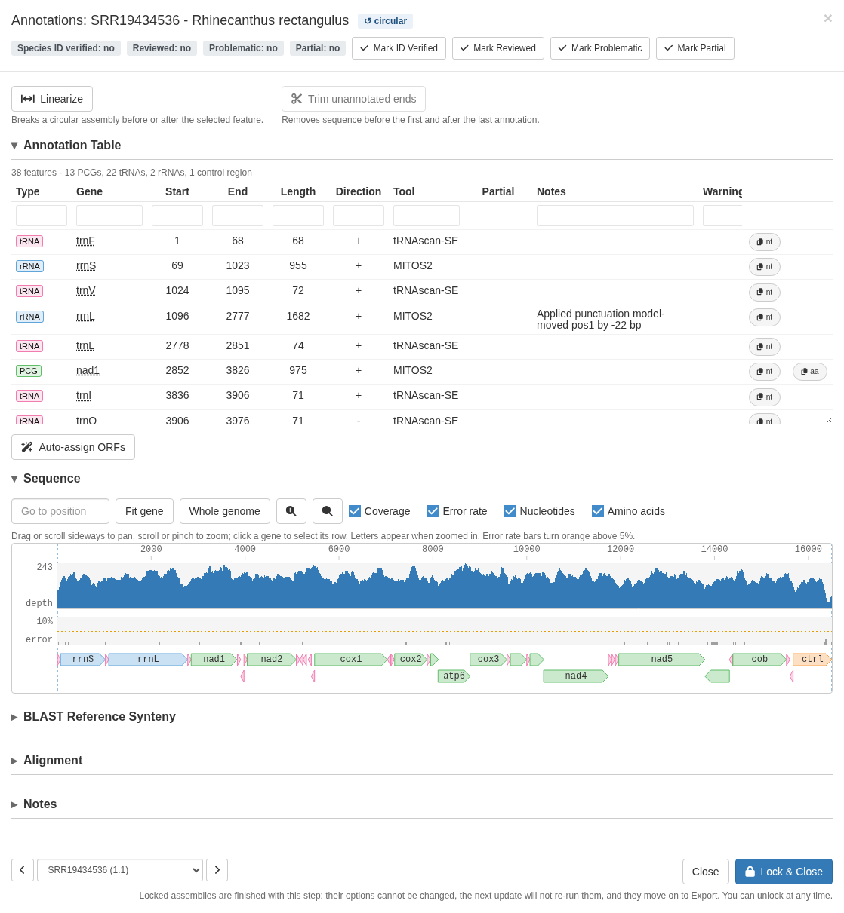
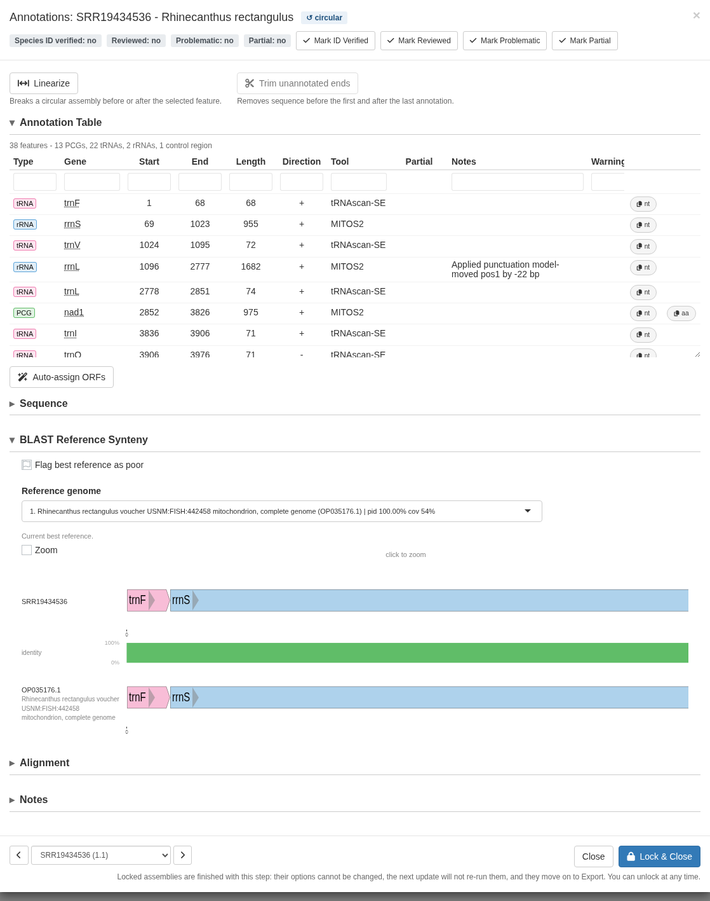
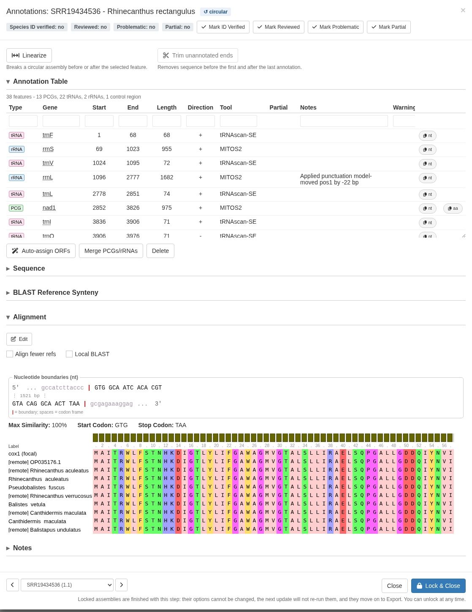
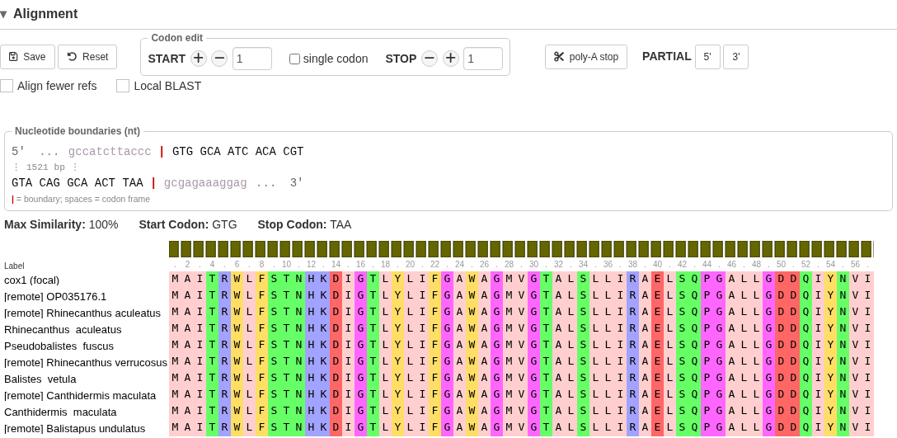

Test project: 1. Assemble 2. Annotate 3. Export
This module finds the genes, curates the gene models against reference sequences from GenBank, and validates the result against rules for your taxonomic group. It attempts to flag any issues that would cause a rejection during GenBank submission.
Each row here is one assembly unit, not one sample. A sample that kept several scaffolds or paths will be represented by several rows, and each is annotated and validated on its own.
Set the options
Annotate Opts. controls the annotation tools.

Genes come from MITOS2
(protein-coding genes, tRNAs, and rRNAs) and tRNAscan-SE
(tRNAs), with MitoFinder, ARWEN, ARAGORN, and ORFfinder available as
optional annotators. The MITOS2 reference database defaults to
Chordata, but Metazoa_RefSeq89 is the
general-purpose choice for other groups.
Curate Opts. controls what MitoPilot does with those raw annotations.

The setting that matters most is Target, the taxonomic ruleset. It sets the expected gene content, the allowed start and stop codons, the naming conventions, and the genetic code. It defaults to Actinopterygii, which is correct for the test fishes.
For your own data, pick the closest clade from the ruleset browser. The validation parameters below are the ruleset itself, laid out so you can see exactly which rules a sample is being judged against.
No ruleset for your samples? If you do not see an appropriate clade for your samples, please post an issue or reach out to Dan MacGuigan directly at macguigand@si.edu. We are always looking to expand the taxonomic scope of MitoPilot.
When ready, click UPDATE and run the workflow the same way you ran Assemble.
This module is slower than Assemble. MITOS2 takes a few minutes per unit, and curation aligns every protein-coding gene against reference sequences. When working on a computing cluster with your own project, consider running this step as a job rather than directly from the MitoPilot app.
Read the results

Scroll right in the table for the columns that matter:
- PCGCount, tRNACount, rRNACount: how many of each gene type were annotated. For a vertebrate mitogenome you expect 13, 22, and 2.
- Missing: expected genes that were not found.
- Extra: genes annotated more times than the ruleset expects.
- Warnings: how many validation flags were raised. This is your work queue.
A few units stand out in the test project. For example, SRR21844202
has an extra trnW and two warnings.
SCAFFJOIN is missing atp8 and trnK and
carries eight warnings. This is a real consequence of joining scaffolds
across coverage gaps. The sequence in those gaps is set to “N”, so the
genes in those gaps cannot be annotated.
Note. The Warnings column includes dropdown menu at the top filters which warning types are counted. Narrow it to one warning type to pull out every sample with that problem and work through them as a batch.
Inspect a sample
Click details on any row. Here we’ll look at sample
SRR19434536.

The annotation table lists every gene with its position, strand, and
the tool that called it. The Notes column records
changes made during automatic curation, such as a start position moved
upstream or a stop codon trimmed. Warnings shows what
validation flagged. The nt and aa buttons copy
the nucleotide or amino acid sequence to your clipboard.
The badges along the top track the sample: topology, ID verified, reviewed, problematic, and partial. The buttons at the bottom toggle them, which is how you keep track of what you have already looked at across a large project.
Below the table are three collapsible views.
Coverage Map plots read depth along the assembly with the gene models drawn below, zoomed to whichever gene you have selected. The gene bars are semi-transparent so overlapping gene models are easy to spot.

BLAST Reference Synteny lines your annotation up against the closest GenBank mitogenome, with a percent-identity bar between them. Click anywhere in this plot to show a zoomed-in base-pair level alignment of your sample versus the reference.
The reference mitogenome shown in this plot will be exported in your GenBank submission files as a note: “annotation compared to GenBank accession XXX”. If the reference mitogenome is a poor match, you can flag it (remove the submission note) or use the dropdown menu to pick a better reference from among the top BLAST hits.

Alignment shows a selected protein-coding gene aligned to its reference hits and the curation database.

The nucleotide boundary box shows the exact sequence at each end of the gene with the codon frame marked, along with the start and stop codons that were called. Below it, the protein alignment shows your gene (“focal”) alongside the reference proteins.
Manually fix annotations
Click EDIT in the alignment section to nudge the start or stop position and watch the alignment respond.

By default, the + and - buttons search for
the next valid start or stop codon (according to the curation ruleset
you selected). You can toggle the single codon button to
instead nudge the position one codon at a time. This can lead to a
partial gene model with undetermined start or stop
codons.
Clicking the poly-A stop button will truncate a stop
codon to TA or T. Sometimes this is
required by GenBank to avoid overlapping gene models. When transcribed,
these genes will have their stop codon completed by the addition of the
3’ poly-A tail.
You can manually set a gene to have an undetermined start or stop
codon by clicking the Partial 5' or 3'
buttons. MitoPilot will add the appropriate format and notes for that
gene in the GenBank submission files. Best to use this sparingly, as
GenBank may not accept a submission with many “partial” gene models.
Other useful editing tools:
- Merge PCGs/rRNAs joins gene models that were split into separate pieces, which is how you handle spliced or fragmented genes.
- Auto-assign ORFs renames open reading frames found by ORFfinder based on sequence similarity with the curation database of protein-coding genes.
- Delete removes an annotation entirely. Bring back a deleted annotation using the Restore button.
- Trim unannotated ends cuts assembly overhang that carries no genes, can be undone.
- Linearize converts a circular assembly to linear, useful when the control region assembled poorly.
- Align fewer refs in the Alignment panel speeds up editing by restricting the alignment to the top five hits, which matters because the alignment is recomputed on every start/stop codon nudge.
You can record what you did in the Notes box; it saves automatically and is retained with the sample.
Warning. Validation warnings do not disappear when you fix the underlying problem. They record the state at the time the Annotate module ran. Use the Reviewed toggle to track what you have actually dealt with.